Un campus que les étudiants animent.
Sur le campus de Chéraga, la vie étudiante se construit avec le Bureau des étudiants, la junior entreprise MMA, l’incubateur GEM-Start et un calendrier qui rythme l’année, de la semaine d’intégration aux soutenances de juillet.
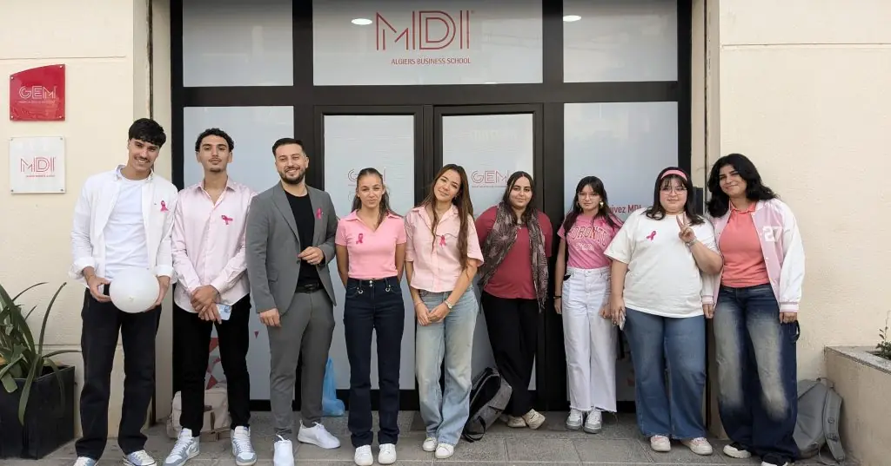
Une journée à MDI
Une journée à MDI.
Six moments d’une journée type sur le campus, du hall à la salle de conférence.
08:30
Le hall
Point de rendez-vous du BDE et des étudiants avant le premier cours, le hall accueille aussi les visiteurs des portes ouvertes.

09:00
Premier cours
Les cours commencent dans les salles du campus de Chéraga : études de cas, projets en équipe, situations réelles d’entreprise.

11:00
Salle informatique
Business Intelligence, programmation, machine learning : le département Informatique & IA, créé en 2025, fait vivre la salle informatique.
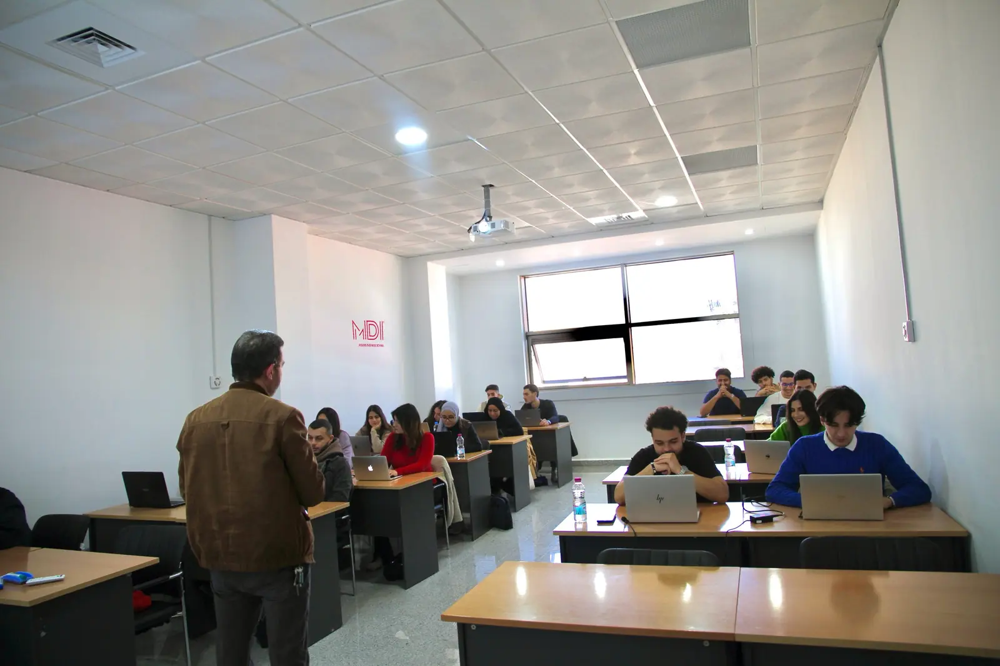
13:30
Entreprendre
Table ronde avec des entrepreneurs : la journée Étudiant-Entrepreneur est organisée par la junior entreprise MMA (2e édition en mai 2024, avec six mois d’incubation à GEM-Start pour les lauréats).
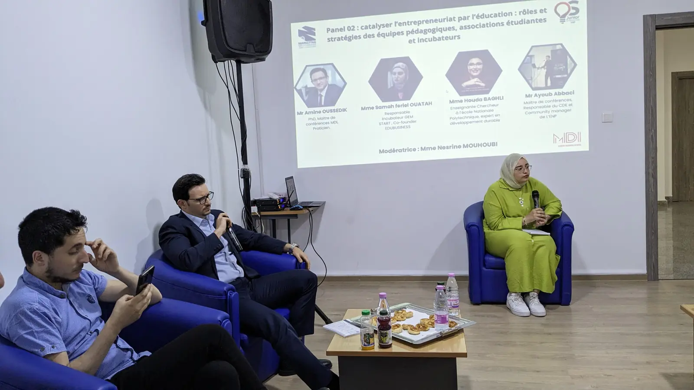
15:00
Bibliothèque
Ouvrages de référence du management, revue ManagementS et accès à la bibliothèque numérique ScholarVox.

17:00
Conférence
Leçons inaugurales, rencontres-débats avec les professeurs invités et journées thématiques dans la salle de conférence.

Temps forts
Une année rythmée.
Quatre rendez-vous qui font l’année, puis le calendrier complet.

Rentrée · 30 sept. – 2 oct. 2025
Semaine d’intégration
Trois jours et quatre ateliers pour les nouveaux étudiants de Licence, animés par Emploitic, i-Yusr, U.Builders et une coach en neurosciences appliquées : réussir son parcours, management et informatique, entreprendre, savoir-être.
Le compte renduRentrée · 5 oct. 2025
Leçon inaugurale
Chaque rentrée des Masters s’ouvre par la leçon d’un dirigeant. En 2025, Abdenour Houaoui, CEO de Hamoud Boualem, a parlé du rôle du manager et du leader dans un monde en mutation ; en 2024, Christophe Richard, PDG de BMA Algérie, de la responsabilité sociale des entreprises.
La leçon 2025Innovation · 22 – 24 juin 2025
Le hackathon
Premier hackathon de l’école, co-organisé avec i-Yusr et Al Salam Bank : formation des équipes et workshops le premier jour, création accompagnée par des mentors le deuxième, pitchs devant un jury le troisième.
Retour sur le hackathon
Emploi · chaque décembre
Le Job Day
Forum des entreprises organisé avec l’EFTG au sein du groupe GEM : les éditions 2023 et 2024 ont chacune réuni plus de 40 entreprises pour une journée de speed-dating, stages et premiers emplois.
Recruter nos étudiantsLe calendrier de l’année
De la rentrée aux soutenances.
Les dates précises de chaque édition sont annoncées dans l’agenda et les actualités de l’école.
Voir l’agenda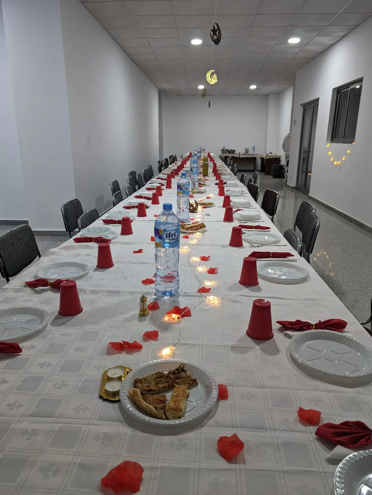
- Sept. – oct.RentréeSemaine d’intégration des nouveaux étudiants de Licence (30 sept. – 2 oct. 2025)
- OctobreRentréeLeçon inaugurale des Masters (5 oct. 2025 : Abdenour Houaoui, CEO de Hamoud Boualem)
- OctobreEngagementOctobre rose : sensibilisation au dépistage du cancer du sein sur le campus
- DécembreForumJob Day, forum des entreprises MDI – EFTG (plus de 40 entreprises en 2023 comme en 2024)
- JanvierSalonSalon de l’Emploi & Formation (édition 2025 le 25 janvier, Alger)
- RamadanConvivialitéIftar du Ramadan réunissant étudiants, enseignants et équipes de l’école
- AvrilSalonSalon de l’étudiant Khotwa (édition 2025 : Tizi Ouzou le 24 avril, ESHRA Alger les 26 et 27)
- 19 maiVie étudianteJournée nationale de l’étudiant, célébrée sur le campus
- MaiEntrepreneuriatJournée Étudiant-Entrepreneur de la junior entreprise MMA (éditions en mai 2021 et mai 2024 ; en 2024, lauréats incubés à GEM-Start)
- JuinHackathonHackathon avec i-Yusr et Al Salam Bank (1re édition du 22 au 24 juin 2025)
- JuilletVie académiqueSoutenances de Licence 3 et de Master 2 (promotion 2026 en juillet)
Associations
S’engager, ensemble.
Les étudiants de MDI animent eux-mêmes la vie du campus : un bureau des étudiants, une junior entreprise et un club littéraire ouverts à toutes les promotions.

Chaque année
Le Bureau des étudiants
Chaque année, la direction installe un nouveau bureau. Le BDE représente les étudiants, organise les moments de convivialité de l’année et accueille les futurs bacheliers et leurs parents lors des journées portes ouvertes.
Le campusJunior entreprise
MMA – Marketing Méditerranée Algérie
La junior entreprise de MDI organise la journée Étudiant-Entrepreneur (2e édition en mai 2024) et le Startup-Day, la compétition annuelle de projets des étudiants, en partenariat avec l’incubateur GEM-Start depuis mars 2024.
Le Startup-DayClub du BDE
Le club littéraire
Le club littéraire du BDE réunit les étudiants autour de lectures ; en décembre 2023, il a reçu la romancière Fatma-Zohra Slimani Douadi.
La bibliothèqueAtelier
Prise de parole en public
En novembre 2023, l’école a organisé un atelier « Prise de parole en public » animé par Dr Nor El Houda Bouzegaou : une compétence utile pour les soutenances, les entretiens et les pitchs.
Les formationsServices
Ce que l’école met à votre disposition.
Quatre services concrets, utilisables dès la première année et, pour certains, bien après le diplôme.
Documentation
Bibliothèque et ScholarVox
La bibliothèque du campus, le centre de documentation et, pour les étudiants comme pour les enseignants, l’accès à la bibliothèque numérique ScholarVox (Cyberlibris).
La bibliothèqueEntrepreneuriat
L’incubateur GEM-Start
Incubateur labellisé en 2024 : programmes IDÉELAB, BOOSTUP et Entreprendre au féminin, coworking équipé, experts et comité de sélection. Ouvert aux étudiants et aux alumni porteurs de projet.
Présenter un projetRéseau
Les alumni
Plus de 3 000 diplômés depuis la création de l’école et un taux moyen d’insertion de 87 % trois mois après le diplôme (chiffres publiés par l’école) : le réseau alumni relie les promotions entre elles et à l’école, du Job Day aux rencontres-débats.
Rejoindre le réseauFinancement
Bourses et prêts étudiants
MDI Excellence Scholarships, bourses d’entreprises partenaires et, avec Al Salam Bank, des prêts étudiants à taux préférentiels assortis de modalités de remboursement flexibles.
Les bourses et le financementLe campus
Huit instantanés de la vie à MDI.
Des photos prises par l’école sur le campus de Chéraga et lors de ses événements : faites défiler.
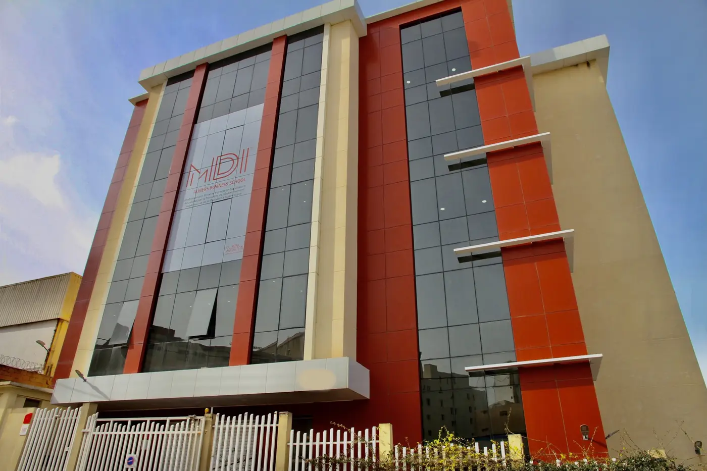
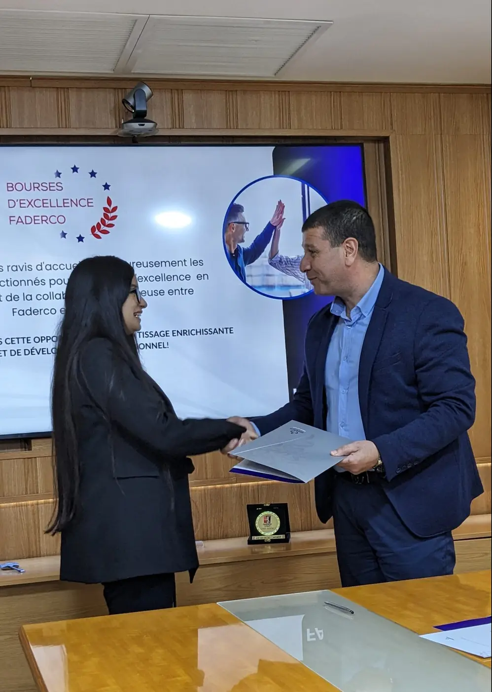
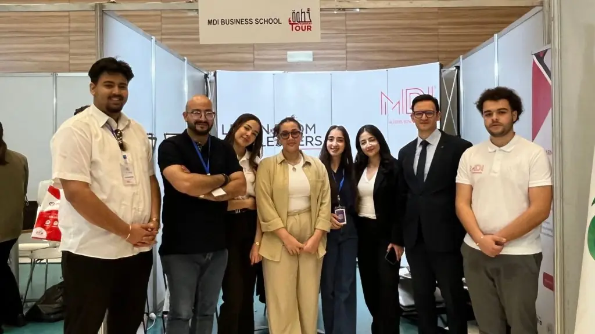
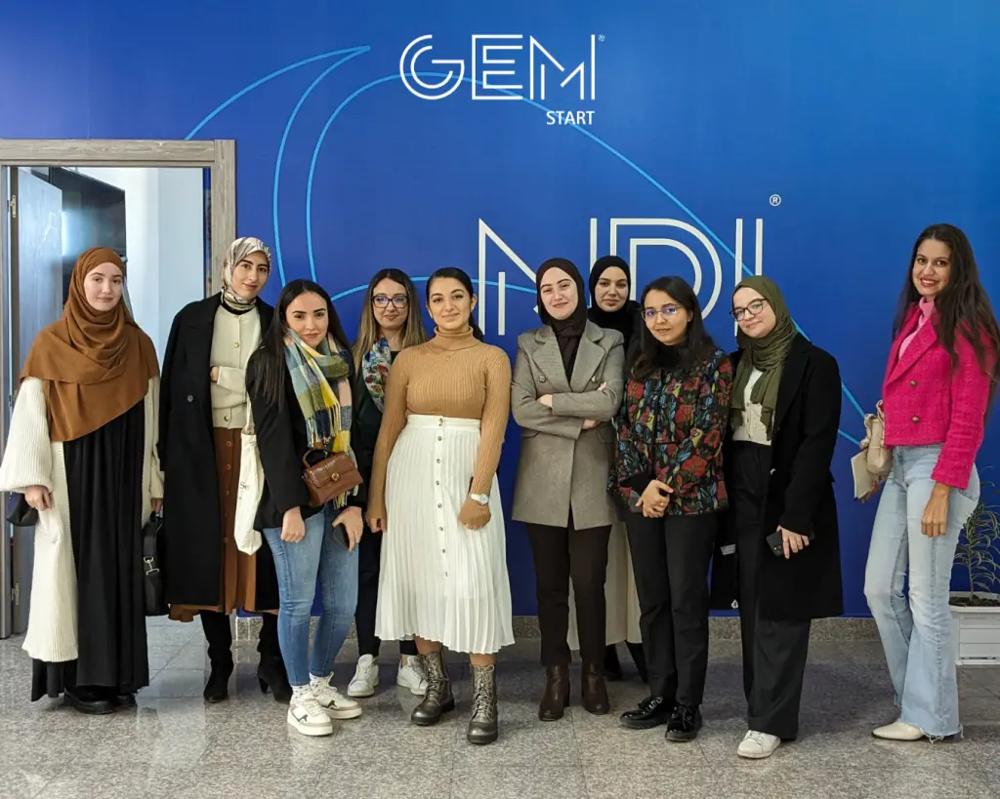

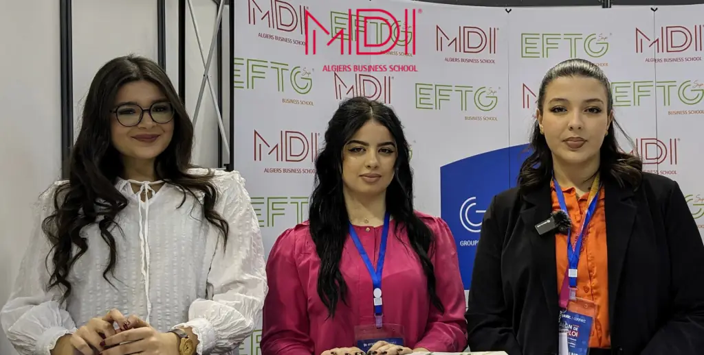
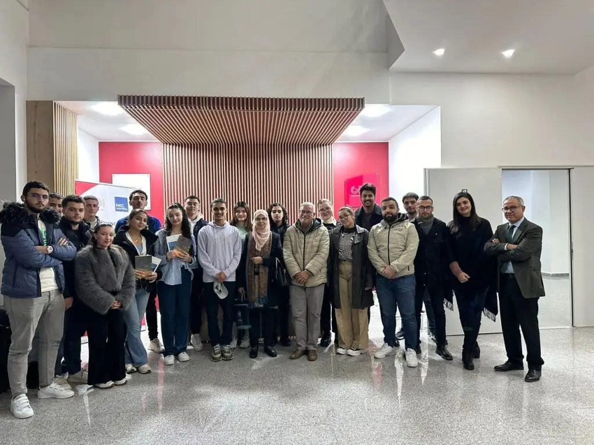
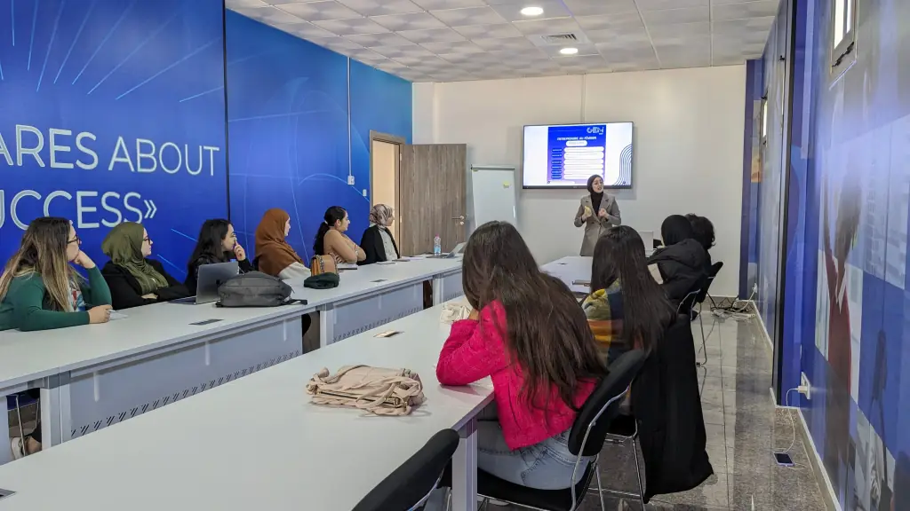
Rejoindre MDI
Venez voir le campus.
Licences après le Bac, Masters après une Licence : un conseiller vous reçoit sur rendez-vous au campus de Chéraga, pour un entretien d’orientation et une visite des lieux.